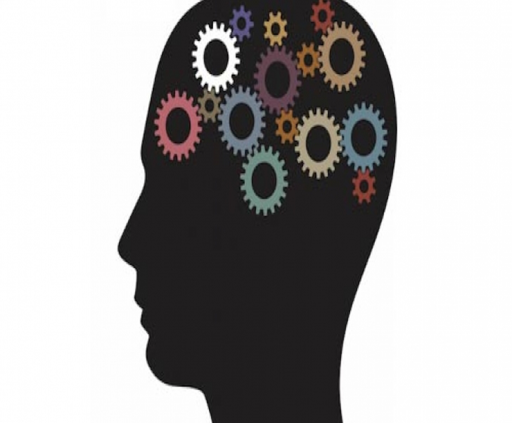
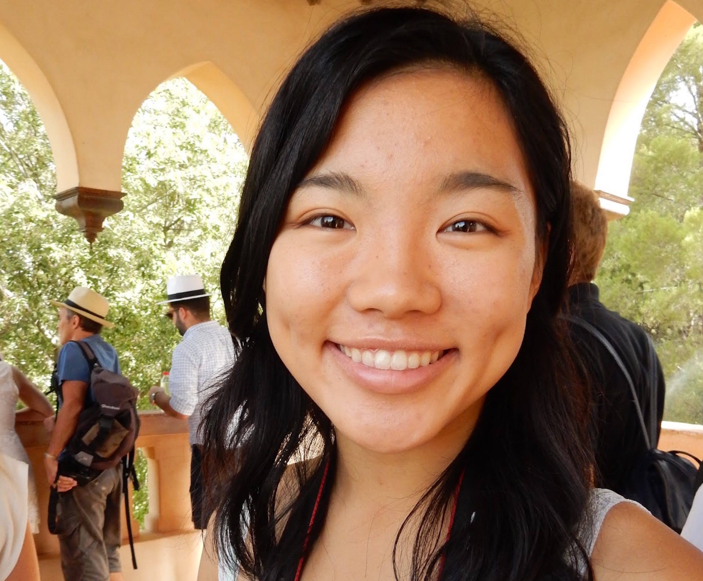
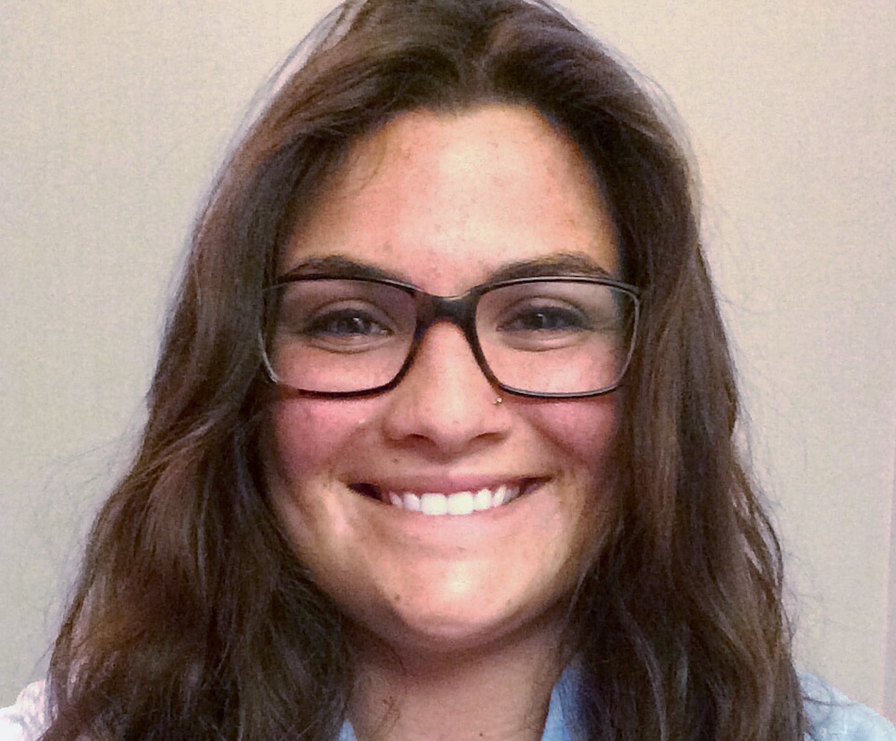
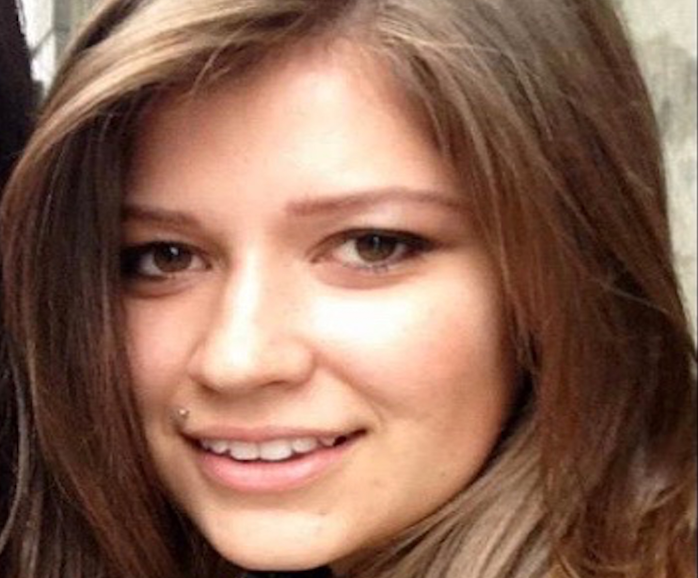
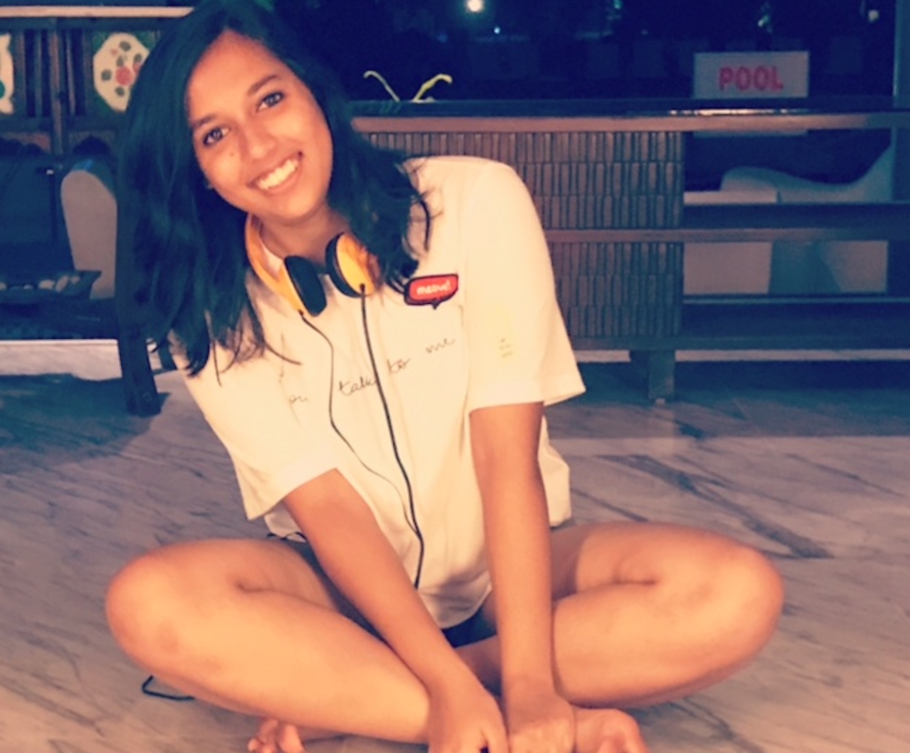

Jigyasa Sharma is a fourth-year Neurobiology major and Co-Editor-in Chief of UJPB. She is specifically interested in how biological mechanisms can manifest in psychological phenomenon in both normal and disease-states. Outside of the journal, she loves being outdoors, playing sports, and exploring Berkeley.
Jigyasa Sharma
Co-Executive in ChiefJuwon is a 4th year double-majoring in Linguistics and Computer Science - also in the fourth year of UJPB! She's interested in cognitive science, computational psychology, neural networks and psycholinguistics. Outside of classwork, Juwon enjoys cooking, listening to music, doing her own research or editing for another journal. After graduation, Juwon wants to do something innovative between multiple disciplines such as Computer Science, Linguistics, and of course Psychology.
Juwon Kim
Co-Executive in ChiefOlivia is a fourth year Psychology Major and Creative Writing Minor. She loves music and is a member of the UC Women's Chorale on campus. Besides singing, she enjoys reading novels, writing fiction, traveling, and watching her brother play baseball.
Olivia Cavagnaro
Co-Executive DirectorRiley is a second-year Psychology major, Human Rights minor, and co-Executive Director of UJPB. She works as a research assistant in Berkeley's Institute of Personality and Social Research by collecting data on social biases and income inequality, and she is also the lab manager of the Cognitive Neuroscience Lab at ULAB. In her free time, she enjoys taking trips around the Bay Area and reading.
Riley McDanal
Co-Executive Director
Allyson is a third year Computer Science major at UC Berkeley and has lived in the Bay Area all her life. She is really interested in how Psychology and Computer Science relate and intersect. In the future, she is going to be a Software Engineer working on back-end frameworks in industry. In her free time, Allyson likes to read, go hiking, and play the piano.
Allyson Koo
Chief Technology OfficerKaty is a second-year intended Molecular Cell Biology major and Spanish minor from Little Rock, Arkansas. Additionally, she is studying to become a certified EMT so that she can volunteer with the Berkeley Medical Reserve Corps. This summer she worked in the Pediatric Surgery Lab at Arkansas Children’s Hospital on a study focusing on the prevention of necrotizing enterocolitis in premature infants. She adores the outdoors; hiking, camping, and visiting the lake are some of her favorites! And in her free time, Katy loves to try new foods, cycle, learn new songs on the guitar, and explore the Bay Area. In the future, she hopes to attend medical school and complete her ultimate bucket list item of visiting every continent in the world.
Katy
EditorGabija Safranavicius is a fourth-year student at University of California, Berkeley. She is studying Social Welfare and Interdisciplinary Field Studies with a concentration in Science, Technology, and Society, and is passionate about applying her studies to field research. In addition to her student work, she is a writing tutor at the Student Learning Center, an media/new intern for the D-Lab, and is involved with two research initiatives. Her current research experience includes working with the Berkeley Institute for Data Science and studying innovation and creativity in Nobel Laureates with the Haas School of Business. After graduation, she intends to travel, then secure a job in the Bay Area or Boston that will further cultivate her love of learning and research. She can be contacted at safranavicius@berkeley.edu.
Gabija Safranavicius
EditorAlice is a second-year intended psychology major from Oklahoma. She is particularly interested in the field of cultural psychology and hopes to get involved in research at Cal. She enjoys visiting art museums, listening to classical music, exploring the Bay Area, and procrastinating by reading Wikipedia articles.
Alice Zhang
Editor

Jenna is a psychology major and is pursing a career in neuroscience. She works in the D’Esposito Lab where she studies emotional processing by the amygdala and prefrontal cortex. During her free time, she enjoys hiking, going to concerts, and listening to the Hamilton soundtrack.
Jenna
Editor

Alice Wang is a first year intended Cognitive Science and Psychology major who is fascinated by developmental and behavioral psychology. Outside of UJPB she dances on a competitive hip hop team and volunteers at the Berkeley Food and Housing Project. She also loves to read, collect fuzzy socks, and vegetate on her bed.
Alice Wang
EditorJewelia is a second-year intended psychology major interested in psychological research relating to the effects of aging, the mechanisms of love and attraction, and the development of cognition in children. Currently, she is a research assistant at the Berkeley Emotion and Emotion Regulation Lab, examining the psychophysiological effects of stress. When she isn’t studying for her next test, Jewelia loves hiking, running, dragging her friends to art museums, and reading.
Jewelia
EditorLy-Shan is a third-year Psychology major. She is passionate about Forensic Psychology and criminal rehabilitation, as well as the ways in which Psychology and Sociology intersect and inform each other. Outside of academic pursuits, she enjoys visiting art museums and watching strange movies. She is an exchange student from the UK who will be here for a year, so she would love to explore everything possible in the Bay Area before she has to leave. Her favourite food is kimchi fried rice and she has a problem with midnight snacking. She hopes to pursue further studies in Clinical Psychology and reduce mental health stigma back in Singapore, the place she calls home.
Ly-Shan
EditorKatherine is a fourth year psychology major and a research assistant at the Berkeley Early Learning Lab. Her academic interests are primarily developmental and social psychology. Outside of school she enjoys art museums, video games, and discovering new coffee shops.
Katherine
Editor
Caitlin is a student at UC Berkeley dedicating her time to Legal Studies. Since she is planning on going into the field of criminal law, she has put a heavy emphasis on psychology in her research. She loves to learn about the brain and how one's thoughts-- whether conscious or subconscious-- can lead to various behaviors. In her time away from her studies, she enjoys pursuing her current job as a model.
Caitlin
Editor

Eva is a senior at UC Berkeley, studying Psychology and English. She currently works in the Cal Mania (CALM) Lab exploring the relationship between impulsivity and emotion-relevant stimulus in people with severe mental illness. She plans on attending graduate school to get a PhD. in Clinical Psychology to become a professor. In her free time, Eva produces comedy shows on campus and has gotten to work with pros like H. Jon Benjamin, Sarah Silverman, Demetri Martin, and Jessica Williams.
Eva
EditorGrace is a third year psychology major, interested in emotion regulation and psychophysiology. She is currently working in Dacher Keltner's lab, studying sacredness and suffering. Outside of UJPB, she is involved in the Association of Psychology Undergraduates, and does philanthropy work for CASA!
Grace
Editor
Isa is a senior majoring in Media Studies. She's interested in decision making processes, particularly as they relate to media messages, consumer behavior, and fashion trends. On campus, she's involved with the social enterprise EthiCAL Apparel where her love for fashion converges with her passion for sustainability. After graduation, Isa will attend graduate school to do consumer behavior research.
Isa
EditorShutong is a third-year Psychology major. She is an exchange student from the University of Glasgow. She loves every single aspect of psychology, particularly clinical psychology. Additionally, she loves music and enjoys traveling.
Shutong
EditorJohn is a transfer student majoring in Computer Science. His interests include issues of statistical methodology and reproducibility in social science, as well as practical benefits of psychology for helping people make wiser decisions and get along better. John has spent his entire life in the Bay Area and has drank a little too much of the kool-aid. Outside of the journal, he is a transhumanist and spends a lot of time thinking about self- and world-improvement.
John
Editor
Giana is a 3rd year Psychology Major at UC Berkeley, still deciding between pursuing either Law School or Graduate School. She has a unique interest in social cognitive psychology, and hopes to perform research in how certain processes can affect legal decisions by a jury. Giana also loves to write her own music, play Settlers of Catan, and eat Thai food.
Giana
Editor

Kayla Geeslin is a fourth-year English Literature major at UCB. She has a particular interest in the field of Journalism and in non-fiction as a whole. Outside of school she enjoys hiking/running with her Frenchie puppy, reading, and furthering her skills in Photography.
Kayla Geeslin
Editor

Sanskriti is a First-Year International student from India. She is currently Undeclared contemplating Psychology, Cognitive Sciences and Creative Writing. She is very keen on pursuing research about depression after graduation and is excited about that prospect. Apart from her academic interests, Sanskriti is very passionate about sports and active follows and plays Tennis, Cricket and Soccer. She is a ‘People’s Person’ who enjoys meeting new people and learning about different cultures immensely.
Sanskriti
EditorSophie is a freshman and is an international student from Korea. Her intended major is psychology or MCB, and her biggest interest lies in neurobiology and criminal psychology. She hopes to participate in research projects on neuroscience in her following school years. In her free time, Sophie likes to take a walk around the campus or play her favorite songs on the piano.
Sophie
Editor